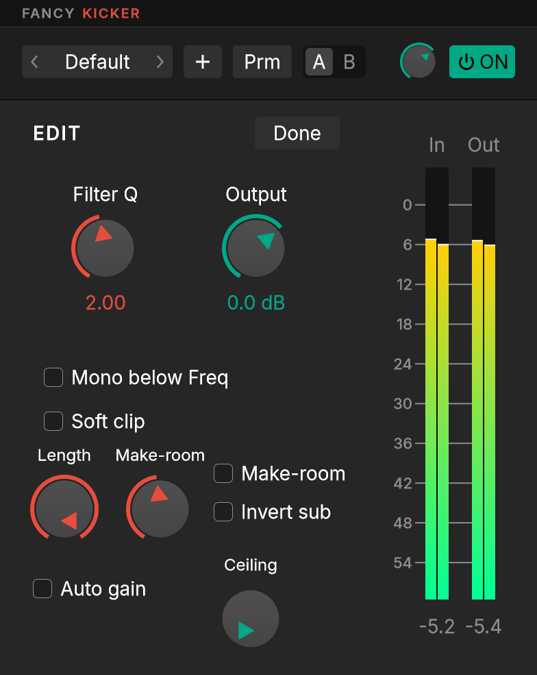

docs/kicker.md: sidechain Duck (Decisions 1 to 3 A) and Wave 2 item 45, Clip oversampling, Decisions 1 and 2 A. New things in dashed yellow, on the plugin's real screenshot (1x coordinates).
1 · The main window: a DUCK tag while Duck is above 0
The tag sits at the top right of the knob card, beside Boost | Sub: there is no room beside the EDIT link, whose caption fills the row. It shows only while Duck is above 0, so a ducking Kicker is never a surprise; clicking it opens the drawer's second page.
In Sub mode the tag sits in the same place.
2 · The EDIT drawer, page Duck and clip
The drawer is full, so it gets two pages, Main | Duck and clip, as Sature's and Exciter's do; Main is today's drawer. Duck (0 to 24 dB, 0 by default) and Release (20 to 500 ms, 120 by default), Duck from (Sidechain or Host sync), with Rate (1/1 to 1/16) and Shape while Host sync is chosen: a pulse on the host's grid, for ducking on the beat without a kick track. Clip oversampling (Off, 2x, 4x; Off by default) is here too, since Main has no row free under Ceiling.

DUCK
Duck fromHost sync
HOST SYNC
Rate
1/4
CLIPPER
Clip oversampling4x
Latency is reported while it's on.
Duck ducks the whole output, the dry bass with the added low end (Decision 1 A). Duck 0 and Clip oversampling Off are today's sound, to the bit. With Sidechain chosen and nothing routed, the main window shows the "No sidechain signal" notice.
3 · The EDIT drawer, page Main
Today's drawer, unchanged, under the new page switch.